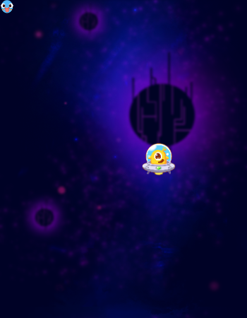
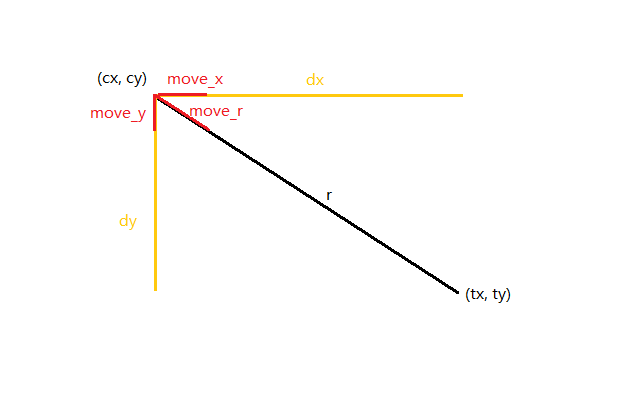
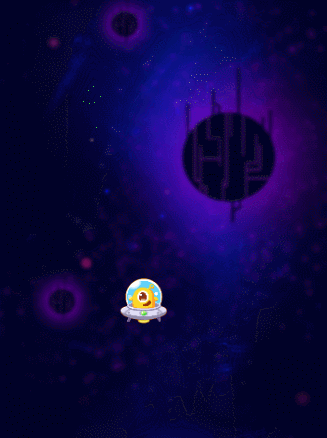

大逃杀¶
素材列表¶
这个游戏使用到的素材很少，只有背景（bg）、玩家（player）和怪物（monster），我们可以随意选取我们喜欢的风格。
canvas.resize(350, 450);
var bg = new Sprite("https://rss.leaplearner.com/Image/Bgs/circuitrybg1.png", 0, 0, canvas.width, canvas.height);
var monster = new Sprite("https://rss.leaplearner.com/Image/Role/CircleFace.png", 0, 0, 20, 20);
var player = new Sprite("https://rss.leaplearner.com/Image/Role/Alien2.png", 200, 200, 50, 50);
这里直接使用了canvas.width, canvas.height作为背景的大小，可以避免修改画面大小时还要去修改背景图片的大小。
别忘了在第一行设定画布的宽度和高度。
lib¶
游戏中使用到了run和stop方法，我们需要使用最新的库文件，v1.0以上
<script src="https://r.leaplearner.com/teachfiles/Text/leap.min.v1.0.js">
</script>
显示¶
为了看到效果，我们写一个绘制循环函数，将上述资源绘制上去。
function draw(){
canvas.clear();
bg.draw();
monster.draw();
player.draw();
}
setInterval(draw, 20);
一起顺利的话，应该看到如下画面：

当然，所有元素都是不能动的。
项目链接：https://code.leaplearner.com/view/61849/1
玩家移动¶
为了统一管理移动功能，我们将为player新建一个update方法
player.update = function(){
// code here
}
function draw(){
player.update();
canvas.clear();
bg.draw();
monster.draw();
player.draw();
}
最简单的，用鼠标来控制主角的移动
player.update = function(){
player.x = Mouse.x - player.w / 2;
player.y = Mouse.y - player.h / 2;
}
使用 player.w 和 player.h 来避免使用“魔法数字”。
项目链接：https://code.leaplearner.com/view/61849/2
限制移动速度¶
但是呢，这个移动太快了，如果是在这个游戏里，过快的移动速度回大大降低游戏的趣味性，因此我们要限制player的移动速度。
在每个update时，让player向鼠标的方向移动固定的距离。
player.speed = 5; // player 的速度
player.update = function(){
let cx = player.x + player.w/2; // player中心点位置 cx 、 cy
let cy = player.y + player.h/2;
let dx = Mouse.x - cx; // player中心点位置和鼠标的位置差异 dx 、dy
let dy = Mouse.y - cy;
let r = Math.sqrt(dx*dx + dy*dy); // 直线距离
if(r<10) r=10; // 距离太小对后续计算影响较大，设定一个最小值
player.x += dx/r * player.speed; // 每个update移动5个像素，分解在x、y方向上
player.y += dy/r * player.speed;
}
这一段需要详细讲解，没有一定基础理解不了(￣^￣)。

用鼠标进行精细控制¶
在实际操作中，我们希望点下鼠标的时候才让player移动。定义一个属性player.move来控制player是否移动。
player.move = false;
Mouse.down = function(){ player.move = true; };
Mouse.up = function(){ player.move = false; };
function draw(){
player.move && player.update(); // if(player.move) player.update() 的酷炫写法
canvas.clear();
bg.draw();
monster.draw();
player.draw();
}
怪物¶
敌人的移动¶
有了上面的经验，我们很容易就可以写出来：
monster.speed = 1; // monster优势在数量，不在速度
monster.update = function(){
let tx = player.x + player.w/2;
let ty = player.y + player.h/2;
let cx = this.x + this.w/2;
let cy = this.y + this.h/2;
let dx = tx - cx;
let dy = ty - cy;
let r = Math.sqrt(dx*dx + dy*dy);
if(r<1) r=1;
this.x += dx/r * this.speed;
this.y += dy/r * this.speed;
};
注意，这个用的全是this，而非monster，因为我们打算出现一大堆的怪物，每个怪物都有自己（this）的移动逻辑，所有monster的update方法中，必须要绑定在自己（this）身上。
测试敌人移动¶
function draw(){
player.move && player.update(); // if(player.move) player.update() 的酷炫写法
monster.update();
canvas.clear();
bg.draw();
monster.draw();
player.draw();
}
一切顺利的话，就可以看到以下的场景了

项目链接：https://code.leaplearner.com/view/61849/3
怪物们¶
移动和绘制¶
在我们游戏中，不仅仅只有一个怪物，所有我们需要一个数组monsters来存储所有的怪物。同时，给monsters添加2个方法update 和draw。
var monsters = [];
monsters.update = function(){
monsters.forEach(function(monster) {
monster.update();
});
};
monsters.draw = function(){
monsters.forEach(function(monster) {
monster.draw();
});
};
修改draw函数，使用monsters来代替monster
function draw(){
player.move && player.update(); // if(player.move) player.update() 的酷炫写法
monsters.update();
canvas.clear();
bg.draw();
monsters.draw();
player.draw();
}
monsters拥有了update和draw方法，但是因为monsters还是个空的数组，所以现在我们看不到任何的怪物出现在画布上。
不停增加的怪物¶
怪物是慢慢添加的，我们增加一个方法addMonster来往monsters中添加怪物，同时用setInterval来不停的添加怪物。记的控制时间间隔，间隔时间太短了会导致短时间内非常多的怪物生成。
function addMonster(){
let newMonster = monster.clone(); // 复制一个monster
monsters.push(newMonster);
}
setInterval(addMonster, 1000); // 每1000毫秒（1秒）添加一个怪物
clone() 方法会克隆一个新的monster，我们要让怪物初始出现在四周，而不是固定的位置，因此每次都要随机一个位置。但是这个随机位置又不能是画布上的任意一点，否则一开始怪物就追上了我们的玩家。
function addMonster(){
let newMonster = monster.clone(); // 复制一个monster
let r = Math.random();
if(r<0.25){ // 25% 的概率从左侧出现
newMonster.x = 0;
newMonster.y = canvas.height * Math.random();
} else if(r<0.5){
newMonster.x = canvas.width; // 25% 的概率右侧出现
newMonster.y = canvas.height * Math.random();
} else if(r<0.75){ // 25% 的概率上方出现
newMonster.x = canvas.width * Math.random();
newMonster.y = 0;
} else{ // 25% 的概率下方出现
newMonster.x = canvas.width * Math.random();
newMonster.y = canvas.height;
}
newMonster.speed = 0.5 + Math.random(); // 随机的速度
monsters.push(newMonster);
}
测试这个程序，你会发现到后面所有的怪物都会集中到一个点上，因为他们的速度是一致的，因此，在生成怪物时，还需要给他们一个随机的速度。
游戏逻辑¶
游戏开始和结束¶
定义两个函数，分布在游戏开始和结束的时候调用。
function GameStart(){
while(monsters.length) monsters.pop();
run(draw);
}
var retry = new Text("Retry", 120, 300, 50);
retry.click = GameStart;
function GameOver(){
stop(draw);
retry.draw();
}
当游戏开始时，调用GameStart()，将所有怪物清除掉，这里还可以使用slice方法，开始draw方法。
当游戏结束时，调用GameOver()，停止draw方法，绘制retry文字。retry上绑定一个事件，游戏开始。
因为有了自定义的GameStart函数，那么我们就直接调用GameStart()，不在使用setIntelval来开始游戏。
注意：删除setIntelval(draw, 20)
// setInterval(drwa, 20);
GameStart();
结束条件¶
当任意一只怪物碰到玩家时，游戏就应该结束。我们直接在update方法中添加就可以了。
monsters.update = function(){
monsters.forEach(function(monster) {
monster.update();
if(monster.collide(player)){
GameOver();
}
});
};
显示分数¶
分数就是monsters的长度，所有在绘制函数中添加显示函数即可
function draw(){
canvas.clear();
bg.draw();
player.move && player.update(); // if(player.move) player.update() 的酷炫写法
monsters.update();
monsters.draw();
player.draw();
text(monsters.length, 10, 40, 30, 'red');
}
项目链接：https://code.leaplearner.com/view/61849/4